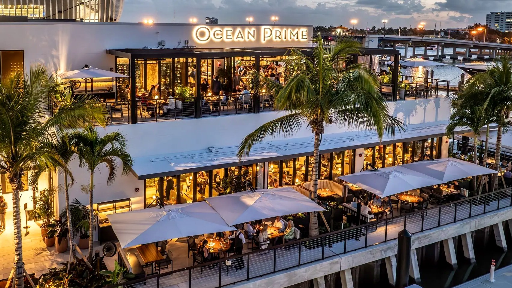
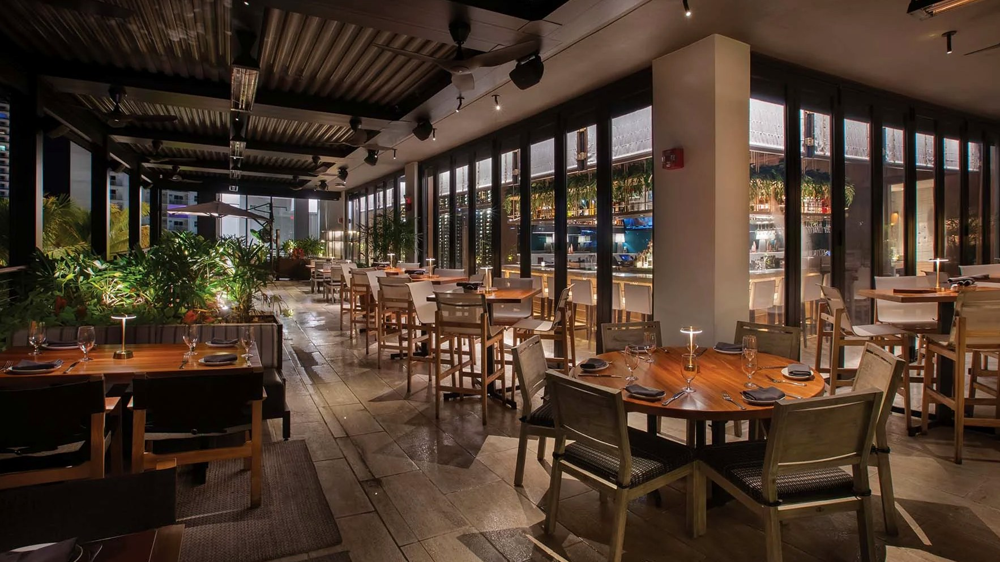
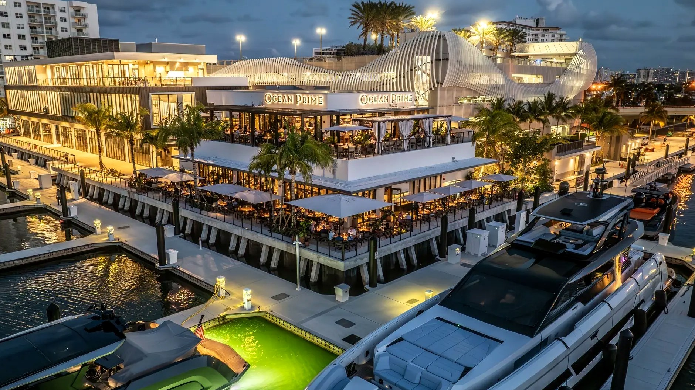

Hospitality / Fort Lauderdale, Florida
Ocean Prime
Euro-Wall folding wall · commercial storefront, two levels
- Owner
- Cameron Mitchell Restaurants
- General contractor
- Buckeye Hospitality Construction
- Architect
- Kobi Karp Architecture
- Jurisdiction
- Broward County HVHZ
01
The project
The dining room, the terrace, and the water had to read as one room.
Ocean Prime at Pier Sixty-Six is a flagship of the Ocean Prime restaurant group, multi-level fine dining sitting directly over the water on the Fort Lauderdale waterfront. Ground-floor and second-floor dining and terrace spaces are wrapped in the dark-framed glazing that defines the brand.
The architectural premise was that the dining room, the terrace, and the water read as one continuous room. That only works if the glazing disappears. A sliding-door sub would have installed sliding doors. What the project needed was a fold-back wall that clears the entire opening, lands flush in the sill, and still seals against wind-driven rain when it closes.
ACG installed the complete Euro-Wall folding wall package along the waterfront elevation, plus the commercial storefront and glazing package across both levels: the full-height facades, the glass partitions dividing dining from terrace, and the entrance systems.
Kobi Karp’s drawings called for minimal sightlines and a flush threshold to the terrace. ACG worked the sill detailing and structural coordination against the waterfront slab during the shop-drawing phase, before anything shipped.

02 / Scope notes
The Euro-Wall fold-back wall clears the entire waterfront opening and lands flush in the sill. No track standing proud of the terrace, no post left in the view.
ACG carried the folding wall from submittal through installation. Every track, hinge, threshold, and weather seal came through one contract, so there was no seam between supplier and installer for the GC to manage.
High-visibility hospitality directly over salt water. Coastal exposure drove the finish and glazing selections carried in the approved submittal for this project.

Installed by
American Commercial Glass, Inc.
Florida certified general contractor · CGC 1531993
Division 08 · UEI QTQYMLLL9PS4
West Palm Beach · Naples · Tampa
More work